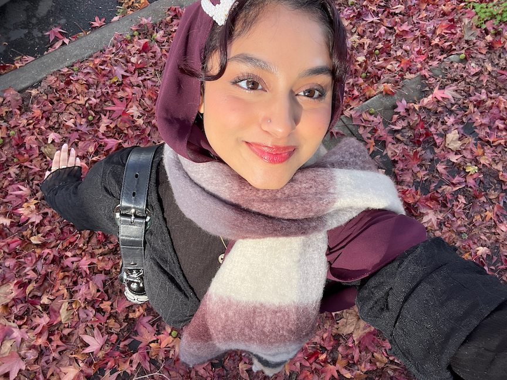

Zainab Majeed
Psychology | 3rd year
Hello! My name is Zainab, it's pronounced as Zay-nub if that helps!
I am a transfer student and this is my second sememster at Berkeley. So far I
love that we have so many different classes we can take and learn from. I hope to learn a lot from this
class as I am passionate about design.
- D'yar
- Crave Subs
- Smokehouse

- 1. I learned that we must develop our design eye by thinking we are the designer of a product.
I also learned that we should try to design something that solves problem.
- 2. My favorite part of the article was how the person who wrote the article did not have a great start to design.
It shows relatability and that others can improve too.
- 3. My favorite quote was “When I first started off in design, I sucked.”
- 4. I rate it a 10, the article was easy-going and had good tips.
It also talked about first starting on design which was is nice to hear others experiences.